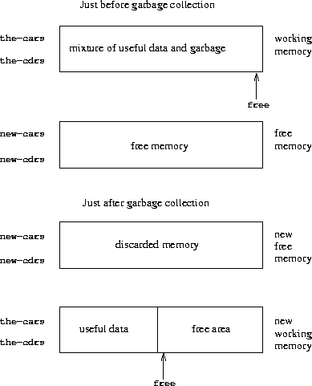

Na seção 5.4, mostraremos como implementar um avaliador do Scheme como uma máquina de registradores. Para simplificar a discussão, assumiremos que nossas máquinas de registradores podem ser equipadas com uma memória estruturada em lista, em que as operações básicas para manipular dados estruturados em lista são primitivas. Postular a existência dessa memória é uma abstração útil quando se foca nos mecanismos de controle de um interpretador do Scheme, mas isso não reflete uma visão realista das operações primitivas de dados reais dos computadores contemporâneos. Para obter uma imagem mais completa de como um sistema Lisp opera, devemos investigar como a estrutura da lista pode ser representada de uma maneira que seja compatível com as memórias de computador convencionais.
Há duas considerações na implementação da estrutura da lista. O primeiro é puramente uma questão de representação: como representar a estrutura “caixa e ponteiro” dos pares Lisp, usando apenas os recursos de armazenamento e endereçamento das memórias típicas de computador. A segunda questão diz respeito ao gerenciamento de memória à medida que a computação prossegue. A operação de um sistema Lisp depende crucialmente da capacidade de criar continuamente novos objetos de dados. Isso inclui objetos criados explicitamente pelos procedimentos Lisp que são interpretados, bem como estruturas criadas pelo próprio interpretador, como ambientes e listas de argumentos. Embora a criação constante de novos objetos de dados não represente nenhum problema em um computador com uma quantidade infinita de memória endereçável rapidamente, as memórias de computador estão disponíveis apenas em tamanhos finitos (mais uma pena). Os sistemas Lisp fornecem, assim, um recurso de alocação automática de armazenamento para apoiar a ilusão de uma memória infinita. Quando um objeto de dados não é mais necessário, a memória alocada a ele é automaticamente reciclada e usada para construir novos objetos de dados. Existem várias técnicas para fornecer essa alocação automática de armazenamento. O método que discutiremos nesta seção é chamado coleta de lixo.
Uma memória de computador convencional pode ser vista como uma matriz de cubos, cada um dos quais pode conter uma informação. Cada cubículo possui um nome exclusivo, chamado endereço ou localização. Os sistemas de memória típicos fornecem duas operações primitivas: uma que busca os dados armazenados em um local especificado e outra que designa novos dados para um local especificado. Os endereços de memória podem ser incrementados para dar suporte ao acesso sequencial a algum conjunto de cubos. De maneira mais geral, muitas operações importantes de dados exigem que os endereços de memória sejam tratados como dados, que podem ser armazenados nos locais de memória e manipulados nos registradores da máquina. A representação da estrutura da lista é uma aplicação dessa endereço aritmético.
Para modelar a memória do computador, usamos um novo tipo de estrutura de dados chamado vetor. Abstratamente, um vetor é um objeto de dados composto cujos elementos individuais podem ser acessados por meio de um índice inteiro em uma quantidade de tempo independente do índice.5 Para descrever operações de memória, usamos dois procedimentos primitivos do Scheme para manipular vetores:
Por exemplo, se v é um vetor, então (vector-ref v 5) obtém a quinta entrada no vetor v e (vector-set! v 5 7) altera o valor da quinta entrada do vetor v para 7.6 Para a memória do computador, esse acesso pode ser implementado através do uso da aritmética de endereços para combinar uma endereço base que especifica o local inicial de um vetor na memória com um índice que especifica o deslocamento de um elemento específico do vetor.
Podemos usar vetores para implementar as estruturas básicas de pares necessárias para uma memória estruturada em lista. Imaginaremos que a memória do computador seja dividida em dois vetores: the-cars e the-cdrs. Representaremos a estrutura da lista da seguinte maneira: Um ponteiro para um par é um índice para os dois vetores. O car do par é a entrada em the-cars com o índice designado e o cdr do par é a entrada em the-cdrs com o índice designado. Também precisamos de uma representação para objetos que não sejam pares (como números e símbolos) e uma maneira de distinguir um tipo de dados de outro. Existem muitos métodos para fazer isso, mas todos eles se reduzem ao uso de ponteiros tipados, ou seja, para estender a noção de “ponteiro” para incluir informações sobre o tipo de dados.7 O tipo de dados permite ao sistema distinguir um ponteiro para um par (que consiste no tipo de dados “par” e um índice nos vetores de memória) dos ponteiros para outros tipos de dados (que consistem em algum outro tipo de dado e o que fosse usado para representar dados desse tipo). Dois objetos de dados são considerados o mesmo (eq?) se seus ponteiros forem idênticos.8 A figura 5.14 ilustra o uso desse método para representar a lista ((1 2) 3 4), cujo diagrama de caixa e ponteiro também é mostrado. Usamos prefixos de letras para indicar as informações do tipo de dados. Assim, um ponteiro para o par com o índice 5 é indicado p5, a lista vazia é indicada pelo ponteiro e0 e um ponteiro para o número 4 é indicado n4. No diagrama de caixa e ponteiro, indicamos no canto inferior esquerdo de cada par o índice vetorial que especifica onde o car e cdr do par são armazenados. Os locais em branco no the-cars e the-cdrs podem conter partes de outras estruturas de lista (sem interesse aqui).
Um ponteiro para um número, como n4, pode consistir em um tipo que indica dados numéricos, com a representação real do número 4.9 Para lidar com números grandes demais para serem representados na quantidade fixa de espaço alocado para um único ponteiro, poderíamos usar um tipo de dados distinto bignum, para o qual o ponteiro designa uma lista na qual as partes do número são armazenadas.10
Um símbolo pode ser representado como um ponteiro tipado que designa uma sequência dos caracteres que formam a representação impressa do símbolo. Essa sequência é construída pelo leitor Lisp quando a cadeia de caracteres é encontrada inicialmente na entrada. Como queremos que duas instâncias de um símbolo sejam reconhecidas como o “mesmo” símbolo por eq? e queremos que eq? Para ser um teste simples de igualdade de ponteiros, devemos garantir que, se o leitor vir a mesma cadeia de caracteres duas vezes, ele usará o mesmo ponteiro (para a mesma sequência de caracteres) para representar as duas ocorrências. Para conseguir isso, o leitor mantém uma tabela, tradicionalmente chamada de obarray, de todos os símbolos que já encontrou. Quando o leitor encontra uma sequência de caracteres e está prestes a construir um símbolo, ele verifica a matriz para ver se alguma vez viu a mesma sequência de caracteres. Caso contrário, ele usa os caracteres para construir um novo símbolo (um ponteiro tipado para uma nova sequência de caracteres) e insere esse ponteiro na matriz. Se o leitor já viu a sequência antes, ela retorna o ponteiro do símbolo armazenado na matriz. Esse processo de substituição de cadeias de caracteres por ponteiros exclusivos é chamado símbolos internos.
Dado o esquema de representação acima, podemos substituir cada operação de lista “primitiva” de uma máquina de registradores por uma ou mais operações vetoriais primitivas. Usaremos dois registradores, the-cars e the-cdrs, para identificar os vetores de memória e assumirá que vector-ref e vector-set! estão disponíveis como operações primitivas. Também assumimos que as operações numéricas nos ponteiros (como incrementar um ponteiro, usar um ponteiro de par para indexar um vetor ou adicionar dois números) usam apenas a parte do índice do ponteiro tipado.
Por exemplo, podemos fazer com que uma máquina de registradores suporte as instruções
(assign <reg1> (op car) (reg <reg2>))
(assign <reg1> (op cdr) (reg <reg2>))
se os implementarmos, respectivamente, como
(assign <reg1> (op vector-ref) (reg the-cars) (reg <reg2>))
(assign <reg1> (op vector-ref) (reg the-cdrs) (reg <reg2>))
As instruções
(perform (op set-car!) (reg <reg1>) (reg <reg2>))
(perform (op set-cdr!) (reg <reg1>) (reg <reg2>))
são implementados como
(perform
(op vector-set!) (reg the-cars) (reg <reg1>) (reg <reg2>))
(perform
(op vector-set!) (reg the-cdrs) (reg <reg1>) (reg <reg2>))
Cons é realizada alocando um índice não utilizado e armazenando os argumentos para cons em the-cars e the-cdrs nessa posição do vetor indexado. Presumimos que exista um registrador especial, free, que sempre mantém um ponteiro de par contendo o próximo índice disponível e que podemos incrementar a parte do índice desse ponteiro para encontrar o próximo local livre.11 Por exemplo, a instrução
(assign <reg1> (op cons) (reg <reg2>) (reg <reg3>))
é implementado como a seguinte sequência de operações de vetor:12
(perform
(op vector-set!) (reg the-cars) (reg free) (reg <reg2>))
(perform
(op vector-set!) (reg the-cdrs) (reg free) (reg <reg3>))
(assign <reg1> (reg free))
(assign free (op +) (reg free) (const 1))
A operação eq?
(op eq?) (reg <reg1>) (reg <reg2>)
simplesmente testa a igualdade de todos os campos nos registradores e predicados como pair?, null?, symbol? e number? precisam apenas verificar o campo de tipo.
Embora nossas máquinas de registradores usem pilhas, não precisamos fazer nada de especial aqui, pois as pilhas podem ser modeladas em termos de listas. A pilha pode ser uma lista dos valores salvos, apontados por um registrador especial the-stack. Portanto, (save <reg>) pode ser implementado como
(assign the-stack (op cons) (reg <reg>) (reg the-stack))
Similarmente, (restore <reg>) pode ser implementado como
(assign <reg> (op car) (reg the-stack))
(assign the-stack (op cdr) (reg the-stack))
e (perform (op initialize-stack)) pode ser implementado como
(assign the-stack (const ()))
Essas operações podem ser expandidas ainda mais em termos das operações de vetor fornecidas acima. Nas arquiteturas de computadores convencionais, no entanto, geralmente é vantajoso alocar a pilha como um vetor separado. Em seguida, empilhando e desempilhando a pilha pode ser realizada incrementando ou diminuindo um índice nesse vetor.
Exercício 5.20. Desenhe a representação de caixa e ponteiro e a representação de vetor de memória (como na figura 5.14) da estrutura da lista produzida por
(define x (cons 1 2))
(define y (list x x))
com o ponteiro free inicialmente sendo p1. Qual é o valor final de free? Quais ponteiros representam os valores de x e y ?
Exercício 5.21. Implemente máquinas de registradores para os seguintes procedimentos. Suponha que as operações de memória da estrutura de lista estejam disponíveis como primitivas da máquina.
a. Count-leaves recursivo:
(define (count-leaves tree)
(cond ((null? tree) 0)
((not (pair? tree)) 1)
(else (+ (count-leaves (car tree))
(count-leaves (cdr tree))))))
b. Count-leaves recursivo com contador explícito:
(define (count-leaves tree)
(define (count-iter tree n)
(cond ((null? tree) n)
((not (pair? tree)) (+ n 1))
(else (count-iter (cdr tree)
(count-iter (car tree) n)))))
(count-iter tree 0))
Exercício 5.22. Exercício 3.12 da seção 3.3.1 apresentou um procedimento append que anexa duas listas para formar uma nova lista e um procedimento append! que une duas listas. Projete uma máquina de registradores para implementar cada um desses procedimentos. Suponha que as operações de memória da estrutura de lista estejam disponíveis como operações primitivas.
O método de representação descrito na seção 5.3.1 resolve o problema de implementar a estrutura da lista, desde que tenhamos uma quantidade infinita de memória. Com um computador real, eventualmente ficaremos sem espaço livre para construir novos pares.13 No entanto, a maioria dos pares gerados em uma computação típica é usada apenas para manter resultados intermediários. Depois que esses resultados são acessados, os pares não são mais necessários – eles são lixo. Por exemplo, o cálculo
(accumulate + 0 (filter odd? (enumerate-interval 0 n)))
constrói duas listas: a enumeração e o resultado da filtragem da enumeração. Quando a acumulação estiver concluída, essas listas não serão mais necessárias e a memória alocada poderá ser recuperada. Se conseguirmos coletar todo o lixo periodicamente, e se isso reciclar memória na mesma velocidade em que construímos novos pares, teremos preservado a ilusão de que há uma quantidade infinita de memória.
Para reciclar pares, precisamos ter uma maneira de determinar quais pares alocados não são necessários (no sentido de que seu conteúdo não pode mais influenciar o futuro da computação). O método que examinaremos para realizar isso é conhecido como coleta de lixo. A coleta de lixo é baseada na observação de que, a qualquer momento na interpretação do Lisp, os únicos objetos que podem afetar o futuro do cálculo são aqueles que podem ser alcançados por alguma sucessão de operações car e cdr iniciadas pelos ponteiros que estão atualmente nos registradores da máquina.14 Qualquer célula de memória que não seja tão acessível pode ser reciclada.
Existem muitas maneiras de executar a coleta de lixo. O método que examinaremos aqui é chamado parar e copiar. A ideia básica é dividir a memória em duas metades: “memória de trabalho” e “memória livre”. Quando cons constrói pares, ele os aloca na memória de trabalho. Quando a memória de trabalho está cheia, realizamos a coleta de lixo, localizando todos os pares úteis na memória de trabalho e copiando-os em locais consecutivos na memória livre. (Os pares úteis são localizados rastreando todas os ponteiros car e cdr, começando com os registradores da máquina). Como não copiamos o lixo, presumivelmente haverá memória livre adicional que podemos usar para alocar novos pares. Além disso, nada na memória de trabalho é necessário, pois todos os pares úteis nela foram copiados. Assim, se trocarmos os papéis da memória de trabalho e da memória livre, podemos continuar processando; novos pares serão alocados na nova memória de trabalho (que era a antiga memória livre). Quando estiver cheio, podemos copiar os pares úteis para a nova memória livre (que era a antiga memória de trabalho).15
Agora usamos nossa linguagem de máquina de registradores para descrever o algoritmo de parar e copiar com mais detalhes. Assumiremos que existe um registrador chamado root que contém um ponteiro para uma estrutura que eventualmente aponta para todos os dados acessíveis. Isso pode ser organizado armazenando o conteúdo de todos os registradores da máquina em uma lista pré-alocada, apontada por root pouco antes de iniciar a coleta de lixo.16 Também assumimos que, além da memória de trabalho atual, há memória livre disponível na qual podemos copiar os dados úteis. A memória de trabalho atual consiste em vetores cujos endereços base estão em registradores chamados the-cars e the-cdrs e a memória livre está nos registradores chamados new-cars e new-cdrs.
A coleta de lixo é acionada quando esgotamos as células livres na memória de trabalho atual, ou seja, quando uma operação cons tenta incrementar o ponteiro free além do final do vetor de memória. Quando o processo de coleta de lixo estiver concluído, o ponteiro root apontará para a nova memória, todos os objetos acessíveis a partir do root foram movidos para a nova memória e os o ponteiro free indicará o próximo local na nova memória onde um novo par pode ser alocado. Além disso, os papéis da memória de trabalho e da nova memória serão trocados – novos pares serão construídos na nova memória, começando no local indicado por free, e a memória de trabalho (anterior) estará disponível como a nova memória para a próxima coleta de lixo. A figura 5.15 mostra o arranjo da memória imediatamente antes e logo após a coleta de lixo.
|  |
O estado do processo de coleta de lixo é controlado mantendo dois ponteiros: free e scan. Eles são iniciados para apontar para o início da nova memória. O algoritmo começa realocando o par apontado por root para o início da nova memória. O par é copiado, o ponteiro rooté ajustado para apontar para o novo local e o ponteiro free é incrementado. Além disso, o local antigo do par é marcado para mostrar que seu conteúdo foi movido. Essa marcação é feita da seguinte maneira: na posição car, colocamos uma etiqueta especial que sinaliza que este é um objeto já movido. (Esse objeto é tradicionalmente chamado de coração partido).17 Na posição cdr colocamos um endereço de encaminhamento que aponta para o local para o qual o objeto foi movido.
Após realocar a raiz, o coletor de lixo entra em seu ciclo básico. Em cada etapa do algoritmo, o ponteiro scan (apontando inicialmente para a raiz realocada) aponta para um par que foi movido para a nova memória, mas cuja car e ponteiros cdr ainda se referem a objetos na memória antiga. Esses objetos são realocados e o ponteiro scan é incrementado. Para realocar um objeto (por exemplo, o objeto indicado pelo ponteiro car do par que estamos varrendo), verificamos se o objeto já foi movido (conforme indicado pela presença de uma etiqueta de coração partido na posição car do objeto). Se o objeto ainda não foi movido, copiamos para o local indicado por free, atualizamos free, colocamos um coração partido no local antigo do objeto e atualize o ponteiro para o objeto (neste exemplo, o ponteiro car do par que estamos varrendo) para apontar para o novo local. Se o objeto já foi movido, seu endereço de encaminhamento (encontrado na posição cdr do coração partido) é substituído pelo ponteiro no par que é varrido. Eventualmente, todos os objetos acessíveis serão movidos e verificados; nesse ponto, o ponteiro scan ultrapassará o ponteiro free e o processo será encerrado.
Podemos especificar o algoritmo de parar e copiar como uma sequência de instruções para uma máquina de registradores. A etapa básica de realocar um objeto é realizada por uma sub-rotina chamada relocate-old-result-in-new. Essa sub-rotina obtém seu argumento, um ponteiro para o objeto a ser realocado, de um registrador chamado old. Ele realoca o objeto designado (aumentando free no processo), coloca um ponteiro para o objeto realocado em um registrador chamado new e retorna ramificando para o ponto de entrada armazenado no registrador relocate-continue. Para iniciar a coleta de lixo, invocamos essa sub-rotina para realocar o ponteiro root, após iniciar free e scan. Quando a realocação de root foi realizado, instalamos o novo ponteiro como o novo root e insira o laço principal do coletor de lixo.
begin-garbage-collection
(assign free (const 0))
(assign scan (const 0))
(assign old (reg root))
(assign relocate-continue (label reassign-root))
(goto (label relocate-old-result-in-new))
reassign-root
(assign root (reg new))
(goto (label gc-loop))
No laço principal do coletor de lixo, devemos determinar se há mais objetos a serem verificados. Fazemos isso testando se o ponteiro scan é coincidente com o ponteiro free. Se os ponteiros forem iguais, todos os objetos acessíveis foram realocados e ramificamos para gc-flip, que deixa mais claro para que possamos continuar o cálculo interrompido. Se ainda houver pares a serem verificados, chamamos a sub-rotina relocate para realocar o car do próximo par (colocando o ponteiro car em old) O registrador relocate-continue é configurado para que a sub-rotina retorne para atualizar o ponteiro car.
gc-loop
(test (op =) (reg scan) (reg free))
(branch (label gc-flip))
(assign old (op vector-ref) (reg new-cars) (reg scan))
(assign relocate-continue (label update-car))
(goto (label relocate-old-result-in-new))
Em update-car, modificamos o ponteiro car do par que é varrido, prossiga para realocar o cdr do par. Voltamos a update-cdr quando essa realocação tiver sido realizada. Após realocar e atualizar o cdr, terminamos de varrer esse par e continuamos com o laço principal.
update-car
(perform
(op vector-set!) (reg new-cars) (reg scan) (reg new))
(assign old (op vector-ref) (reg new-cdrs) (reg scan))
(assign relocate-continue (label update-cdr))
(goto (label relocate-old-result-in-new))
update-cdr
(perform
(op vector-set!) (reg new-cdrs) (reg scan) (reg new))
(assign scan (op +) (reg scan) (const 1))
(goto (label gc-loop))
A sub-rotina relocate-old-result-in-new realoca os objetos da seguinte maneira: Se o objeto a ser realocado (apontado por old) não é um par, retornamos o mesmo ponteiro para o objeto inalterado (em new) (Por exemplo, podemos analisar um par cujo car é o número 4 Se representamos o car de n4, conforme descrito na seção 5.3.1, então queremos o “realocado” o ponteiro car para ainda ser n4). Caso contrário, devemos executar a realocação. Se a posição car do par a ser realocado contém uma etiqueta de coração partido, então o par já foi movido e, portanto, recuperamos o endereço de encaminhamento (da posição cdr do coração partido) e devolva-o em new. Se o ponteiro em old aponta para um par ainda imóvel, movemos o par para a primeira célula livre na nova memória (apontada por free) e configure o coração partido, armazenando uma etiqueta de coração partido e um endereço de encaminhamento no local antigo. Relocate-old-result-in-new usa um registrador oldcr para segurar o car ou o cdr do objeto apontado por old.18
relocate-old-result-in-new
(test (op pointer-to-pair?) (reg old))
(branch (label pair))
(assign new (reg old))
(goto (reg relocate-continue))
pair
(assign oldcr (op vector-ref) (reg the-cars) (reg old))
(test (op broken-heart?) (reg oldcr))
(branch (label already-moved))
(assign new (reg free)) ; new location for pair
;; Update free pointer.
(assign free (op +) (reg free) (const 1))
;; Copy the car and cdr to new memory.
(perform (op vector-set!)
(reg new-cars) (reg new) (reg oldcr))
(assign oldcr (op vector-ref) (reg the-cdrs) (reg old))
(perform (op vector-set!)
(reg new-cdrs) (reg new) (reg oldcr))
;; Construct the broken heart.
(perform (op vector-set!)
(reg the-cars) (reg old) (const broken-heart))
(perform
(op vector-set!) (reg the-cdrs) (reg old) (reg new))
(goto (reg relocate-continue))
already-moved
(assign new (op vector-ref) (reg the-cdrs) (reg old))
(goto (reg relocate-continue))
No final do processo de coleta de lixo, trocamos o papel das memórias antigas e novas trocando ponteiros: trocando the-cars com new-cars e the-cdrs com new-cdrs. Estaremos prontos para executar outra coleta de lixo na próxima vez que a memória acabar.
gc-flip
(assign temp (reg the-cdrs))
(assign the-cdrs (reg new-cdrs))
(assign new-cdrs (reg temp))
(assign temp (reg the-cars))
(assign the-cars (reg new-cars))
(assign new-cars (reg temp))
5 Poderíamos representar a memória como listas de itens. No entanto, o tempo de acesso não seria independente do índice, pois o acesso ao n ésimo elemento de uma lista requer n - 1 operações cdr.
6 Para completar, devemos especificar uma operação make-vector que constrói vetores. No entanto, na presente aplicação, usaremos vetores apenas para modelar divisões fixas da memória do computador.
7 É exatamente a mesma ideia de “dados etiquetados” que introduzimos no capítulo 2 para lidar com operações genéricas. Aqui, no entanto, os tipos de dados são incluídos no nível da máquina primitiva, em vez de construídos através do uso de listas.
8 As informações de tipo podem ser codificadas de várias maneiras, dependendo dos detalhes da máquina na qual o sistema Lisp será implementado. A eficiência de execução dos programas Lisp dependerá fortemente de como essa escolha é esperta, mas é difícil formular regras gerais de projeto para boas escolhas. A maneira mais direta de implementar ponteiros tipados é alocar um conjunto fixo de bits em cada ponteiro para ser um campo de tipo que codifica o tipo de dados. Questões importantes a serem abordadas ao projetar essa representação incluem o seguinte: Quantos bits de tipo são necessários? Qual deve ser o tamanho dos índices vetoriais? Com que eficiência as instruções primitivas da máquina podem ser usadas para manipular os campos de tipo dos ponteiros? Diz-se que máquinas que incluem hardware especial para o manuseio eficiente de campos de tipos arquiteturas etiquetadas.
9 Esta decisão sobre a representação de números determina se eq?, que testa a igualdade de ponteiros, pode ser usado para testar a igualdade de números. Se o ponteiro contiver o próprio número, números iguais terão o mesmo ponteiro. Mas se o ponteiro contiver o índice de um local em que o número está armazenado, será garantido que números iguais tenham ponteiros iguais apenas se formos cuidadosos para nunca armazenar o mesmo número em mais de um local.
10 É como escrever um número como uma sequência de dígitos, exceto que cada “dígito” é um número entre 0 e o maior número que pode ser armazenado em um único ponteiro.
11 Existem outras maneiras de encontrar armazenamento gratuito. Por exemplo, poderíamos ligar todos os pares não utilizados em uma lista livre. Nossos locais gratuitos são consecutivos (e, portanto, podem ser acessados incrementando um ponteiro), pois usamos um coletor de lixo compactador, como veremos na seção 5.3.2.
12 Esta é essencialmente a implementação de cons em termos de set-car! e set-cdr!, conforme descrito na seção 3.3.1. A operação get-new-pair usado nessa implementação é realizado aqui pelo ponteiro free.
13 Isso pode não ser verdade eventualmente, pois as memórias podem ficar grandes o suficiente para que seria impossível ficar sem memória livre durante a vida útil do computador. Por exemplo, existem cerca de 3 × 1013, microssegundos em um ano, então, se usassemos cons uma vez por microssegundo precisaríamos de 1015 células de memória para construir uma máquina que poderia operar por 30 anos sem ficar sem memória. Essa quantidade de memória parece absurdamente grande para os padrões atuais, mas não é fisicamente impossível. Por outro lado, os processadores ficão mais rápidos e um computador futuro pode ter um grande número de processadores operando em paralelo em uma única memória; portanto, pode ser possível usar a memória mais rapidamente do que postulamos.
14 Assumimos aqui que a pilha é representada como uma lista, conforme descrito na seção 5.3.1, para que os itens na pilha sejam acessíveis através do ponteiro no registrador da pilha.
15 Esta ideia foi inventada e implementada pela primeira vez por Minsky, como parte da implementação do Lisp para o PDP-1 no Laboratório de Pesquisa Eletrônica do MIT. Foi mais desenvolvido por Fenichel e Yochelson (1969) para uso na implementação Lisp para o sistema de compartilhamento de tempo Multics. Mais tarde, Baker (1978) desenvolveu uma versão em tempo real do método, que não requer que o cálculo seja interrompido durante a coleta de lixo. A ideia de Baker foi estendida por Hewitt, Lieberman e Moon (veja Lieberman e Hewitt 1983) para aproveitar o fato de que uma estrutura é mais volátil e outra é mais permanente.
Uma técnica alternativa de coleta de lixo comumente usada é o método marcar e varrer. Isso consiste em rastrear toda a estrutura acessível a partir dos registradores da máquina e marcar cada par que alcançamos. Em seguida, examinamos toda a memória, e qualquer local que não esteja marcado é “varrido” como lixo e disponibilizado para reutilização. Uma discussão completa sobre o método de varrer e marcar pode ser encontrada em Allen 1978.
O algoritmo Minsky-Fenichel-Yochelson é o algoritmo dominante em uso em sistemas de memória grande, pois examina apenas a parte útil da memória. Isso contrasta com a varrer e marcar, na qual a fase de varredura deve verificar toda a memória. Uma segunda vantagem do stop-and-copy é que é um coletor de lixo de compactação. Ou seja, no final da fase de coleta de lixo, os dados úteis serão movidos para locais de memória consecutivos, com todos os pares de lixo compactados. Isso pode ser uma consideração de desempenho extremamente importante em máquinas com memória virtual, nas quais acessos a endereços de memória amplamente separados podem exigir operações extras de paginação.
16 Esta lista de registradores não inclui os registradores usados pelo sistema de alocação de armazenamento - root, the-cars, the-cdrs e os outros registradores que serão introduzidos nesta seção.
17 O termo coração partido foi cunhado por David Cressey, que escreveu um coletor de lixo para MDL, um dialeto do Lisp desenvolvido no MIT no início dos anos 70.
18 O coletor de lixo usa o predicado de baixo nível pointer-to-pair? em vez da operação da estrutura da lista pair?, pois em um sistema real pode haver vários elementos que são tratados como pares para fins de coleta de lixo. Por exemplo, em um sistema do Scheme que esteja em conformidade com o padrão IEEE, um objeto de procedimento pode ser implementado como um tipo especial de “par” que não satisfaz o predicado pair?. Para fins de simulação, pointer-to-pair? pode ser implementado como pair?.